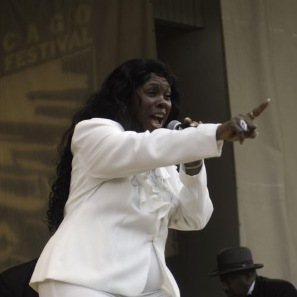

Ruby Andrews
Ruby Mae Stackhouse, known professionally as Ruby Andrews, was an American R&B/soul singer from Chicago, Illinois. Beginning her professional career in the mid-1960s, Andrews was best known for her songs: "Casanova " (1967), "You Made a Believer " (1969) and "Everybody Saw You" (1970).
Complete Discography & Tracklists (11)
1972 Black Ruby 🎵 10 Tracks
2009 Casanova 🎵 11 Tracks
2011 Soul Legend 🎵 25 Tracks
2013 Hits Anthology 🎵 16 Tracks
2013 Kiss This (Digitally Remastered) 🎵 10 Tracks
2013 Everybody Saw You (Digitally Remastered) 🎵 0 Tracks
No tracks registered.
2014 Hound Dog / Away from the Crowd (Digital 45) 🎵 0 Tracks
No tracks registered.